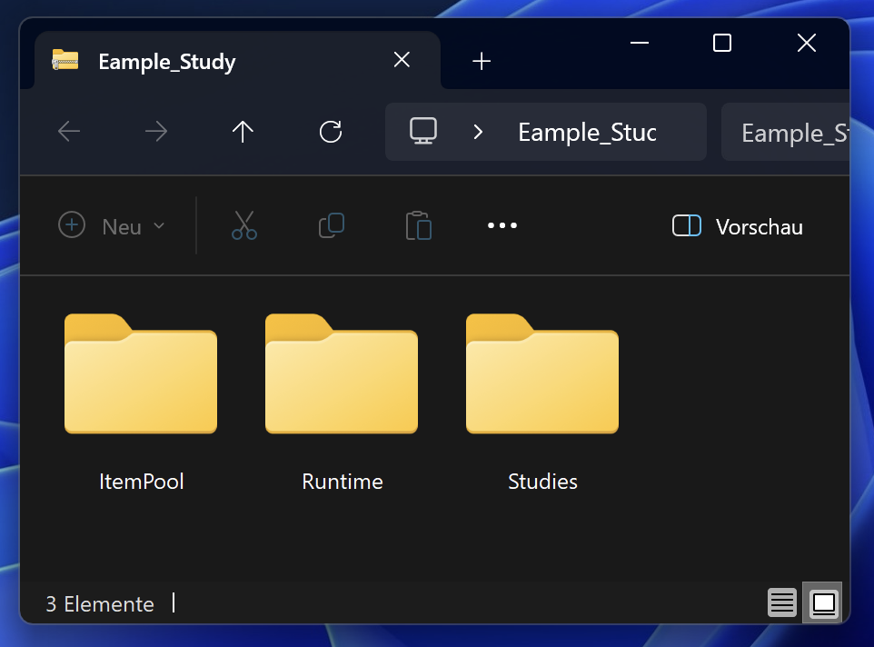
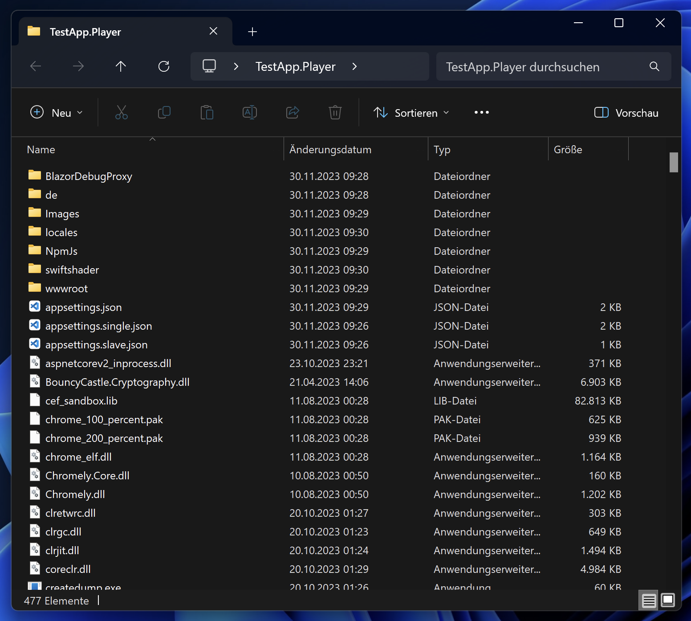

Datenerhebung: In IRTlib Player Importieren / Data Collection: Import into IRTlib Player
Import Configuration
The following describes how to use a study configuration created with an IRTlib Editor that is available as a ZIP archive.
A published version of a Study is required for data collection with an IRTlib Player.
If a sealed study configuration has been exported from the IRTlib Editor, it can be integrated into an IRTlib Player.
Two options are currently supported:
- Automatic import from ZIP archive
- Manual import from ZIP archive
The automatic import is only possible for the first Study in an IRTlib Player. If several Studies are to be used in parallel in an IRTlib Player, a manual import must be configured.
Automatic Import
For an automatic import of a Study available as a ZIP archive in an offline IRTlib Player, the player can first be started via the executable file TestApp.Player.Desktop.exe.
If this IRTlib Player has not yet been configured with a Study (i.e. the player has been downloaded directly from the Github repository as described under Download, for example), the following dialogue appears:

The ZIP archive can be opened directly by clicking the Deploy Study button. It is then automatically inserted into the IRTlib Player and can be used in the way configured in the Login section of the Study.
Manual Import
If no automatic import is possible or desired, the contents of the ZIP archive of a Study can also be integrated manually into the directory of the IRTlib Player provided for this purpose.
Each ZIP archive with a study configuration exported from the IRTlib Editor contains three directories. The ZIP archives {StudyName.zip} can be opened with the Windows Explorer, for example:

To integrate the Study into an IRTlib Player, the contents of these three directories can now be integrated into the programme directory of an offline IRTlib Player, for example.
| Step | Description |
|---|---|
| 1. | Unzip the player (TestApp.Player.zip). This can be done using Windows Explorer, for example: |
 |
|
| 2. | Navigate to the unzipped directory: |
|  | |
| 3. | Create a new folder Content within the player folder (i.e. TestApp.Player/Content/). If a Study is already configured, then the Content folder already exists. |
| 4. | Copy the three folders ItemPool, Runtime and Studies from the downloaded study {StudyName.zip} into the Content folder of the player. |
 |
|
| 5. | Start the file TestApp.Player.Desktop.exe |
| 6. | If necessary, accept the following warning: |
 |
The import of studies into an online IRTlib Player is analogous to the procedure described here. For this, access to the volume /app/Content defined in the docker-compse.yml file is required for preparation.
Configure deliveries
The study configurations created with an IRTlib Editor can be used with different variants of the IRTlib Player.
Three versions are currently available:
- Desktop version (Windows)
- Local server version (Windows)
- Online version (Docker)
Desktop version (Windows)
Basic configurations of the IRTlib Player (display in windowed mode vs. full screen mode) are part of the study configuration. Only studies with the same display settings can be used simultaneously in an offline IRTlib Player. Multiple copies of an offline IRTlib Player on one computer are possible.
To start the (offline) IRTlib Player on a computer, the executable file TestApp.Player.Desktop.exe must be started.
Data Storage: The data collected during a data collection with the offline IRTlib Player is stored locally in a directory. The directory and the file name for the raw data storage are configured in the Study and can be customised using startup parameters. The user name or the UUID created is used as the file name of the raw data archive. If the user name is used more than once in an (offline) IRTlib Player, i.e. if a raw data archive with this file name already exists when the IRTlib Player is closed, it is not overwritten but a suffix is added (e.g. PersonIdentifier_1.zip).
Startup Parameter: The integration of the offline IRTlib Player into programmed processes is possible. Login data (user name, user name + password, token) that are configured in a Study can be transferred as so-called startup parameters. These parameters are then appended to the call of TestApp.Player.Desktop.exe.
Example:
TestApp.Player.Desktop.exe /RawDataFolder="..\\myDataFolder"
Valid startup parameters are:
/AutoLoginCreateWithTest="{StudyName}": Requests the administration of the study named{StudyName}./AutoLoginUserName="{PersonIdentifier}": Passes the login information{PersonIdentifier}as the user name./MyBlocklyVariable="123": Passes the value123for the Blockly variableMyBlocklyVariable./MonitoringFile="..\\last-run.json": Path and file name of the so-called monitoring file./RawDataFolder="..\\myDataFolder": Path to the directory in which the raw data archives are saved./volume="0.5": Value to be used to set the system volume (between 0 and 1)./minvolume="0.2": Value to be used as the lower volume threshold (between 0 and 1)./maxvolume="0.8": Value to be used as the upper volume threshold (between 0 and 1).
Several startup parameters in succession are possible (separated by spaces).
Technical configurations that are not to be transferred via startup parameters can also be defined via the file appsettings.json, which is contained in the directory TestApp.Player.
For example, the volume configurations can be made in the Chromely section:
{
...
"Chromely": {
...
"Audio": {
"MinVolume": 0,
"MaxVolume": 1,
"StartVolume": 0.5
}
}
}Checking Prerequisites: The IRTlib Player should be able to run on Windows computers (currently supported from Windows 10) without further installation or runtime requirements. However, special configurations, virus scanners etc. may prevent it from running. A tool for checking prerequisites can be created, for example, based on this example (IRTlibReadiness).
The provided Windows version of the IRTlib Player enables a simple kiosk mode, which is only intended for computers with only one screen (e.g. notebooks). For an exam-safe kiosk solution, the offline version of the IRTlib Player can be combined as a local server with additional software (such as the Safe Exam Browser).
Local server (Windows)
The ZIP archives of the offline IRTlib Player available via the Github repository in the Releases section also contain a local server version parallel to the application with integrated browser (TestApp.Player.Desktop.exe), which can be started via the executable file TestApp.Player.Server.exe.
The version TestApp.Player.Server.exe is intended for offline operation in bring-in networks, e.g., when WLAN routers and server notebooks are brought into schools. This version is not intended for online use (for which the Docker version is provided).
Online version (Docker)
Integration: To carry out data collection, the Docker image of the IRTlib Player should only be accessible via https-secured connections. This can be realised, for example, using an additional nginx configured as a reverse proxy.
Access to Editor: Unauthorised persons who are not involved in study preparation must not be able to access the IRTlib Editor. The Github repository provides IRTlib Editor and IRTlib Player. For operational data collection, it is not necessary to run the IRTlib Editor online, as the study preparation can also be created with the offline version of the IRTlib Editor. If the IRTlib Editor is hosted online, it must be protected against unauthorised access.
Access to directories: The item contents that are configured for an assessment are stored in the volumes /app/Content (IRTlib Player) and /app/data (IRTlib Editor) defined in the docker-compse.yml file. To ensure the protection of instruments, unauthorised persons must not be able to access these volumes.
Data storage: The data collected during a data collection with the online IRTlib Player is stored in the volume app/result. They can be retrieved from there as directories (one directory per session) or as raw data archives via an API (if an API key is defined).
When using Docker containers, assessment content and data can be accessed online. Assessment content is only protected via the login mode defined in the study configuration. Personal data and assessment content may also be accessible if an API key is defined.
Configuration of the player: The file appsettings.json, which is contained in the TestApp.Player directory, is central to the technical configuration of the player. Three different API keys (i.e. access keys) can be stored in this file by storing them in the following JSON structure before the Docker container is started:
"API": {
"ExternalExportKey": "",
"DevelopmentKey": "",
"LoginManagementKeys": []
}The API keys have the following functions:
ExternalExportKey: This key is used to gain access to the data collected with the IRTlib Player. The data can be accessed via the R package LogFSM, for example, as described in the section Data retrieval.
The list of the processed session, i.e. the session identifiers, can be retrieved as JSON with an API key for ExternalExportKey via the following call:
https://{U}/{S}/api/session/?apiKey={K}
{U}is the URL of the IRTlib Player{S}is the identifier of the study{K}is theExternalExportKeyas defined in theappsettings.json
With a known Session-Identifier the raw data can then be retrieved via the following call with an API-Key for ExternalExportKey:
https://{U}/{S}/api/session/{ID}/result?apiKey={K}
{ID}is the Session-Identifier (e.g. the user name, depending on the configuration of the login)
DevelopmentKey: This API-Key is intended for customising study configurations in a running player.
This function is currently under development.
LoginManagementKeys: This list of API-Keys is intended for customising login data (accounts) in a running player.
This function is currently under development.
Monitoring: (A method for monitoring Docker containers is under development).
Testing and Releasing Deliveries
With the integration of a study configuration into an IRTlib Player, the preparation is not yet complete. Before data collection can be started with the IRTlib software, the following tests should be conducted:
(Tests within the CBA ItemBuilder-Preview): Before configuring a study and a survey section with CBA ItemBuilder-tasks, it should already have been tested in terms of presentation, functionality and scoring in the Preview of the CBA ItemBuilder.
Functional tests: Especially if CBA ItemBuilder-tasks interact with the delivery platform (such as login items), functional tests (i.e. tests of specific functions) should be carried out in the delivery software. This also applies to navigation between items and, of course, the flow control configured in the delivery environment.
Cross-browser testing: If studies are not conducted with the offline IRTlib Player (which comes with its own browser) and especially if newly or specifically programmed JavaScript/HTML5 content is used within the CBA ItemBuilder-Tasks via so-called *ExternalPageFrames (i.e. iframes), testing should be carried out in different browsers.
Performance tests: If large media files (videos, audio files) are included in the CBA ItemBuilder-Tasks, it may be advisable to test the feasibility of the assessment even under unfavourable network conditions (e.g. low bandwidth, long latencies, connection drops, etc.).
Load tests: If a large number of test participants are to be tested in parallel (online), it may be advisable to coordinate the load behaviour of the delivery (and, for example, the resources available for the Docker container) in advance.
Data storage check: In any case, the fit of the scoring definition within the CBA ItemBuilder-Tasks and the configuration in the IRTlib Editor should be checked and a data storage check made. This means that synthetic click patterns (i.e. responses) are entered before the start of the survey and compared with the responses stored in the data set. In order to be able to easily recognise input errors during the subsequent check, it has proven useful to record screen videos in parallel for the data storage check.
Smoke test: The final form of testing is a run-through test in the fully configured setting from Study in an IRTlib Player. The survey should be displayed correctly and a readable raw data archive should be created.
Suggested Test Plans
The provision of the free research software IRTlib Editor and IRTlib Player is without guarantee and no liability can be accepted for missing data, data loss or compromised data etc.
Generally valid recommendations for (absolutely) necessary tests are difficult to formulate, the following table is therefore to be understood as a non-binding recommendation, which must be weighed up in each specific case.
| Test | Recommendation | Condition |
|---|---|---|
| CBA ItemBuilder-Preview | Always | (Errors in presentation, behaviour and scoring that can already be found during item creation should be systematically tested and excluded before creating a study configuration). |
| Functional tests | If required | Only if IRTlib Player and CBA ItemBuilder-Tasks have to interact and in relation to functionality defined in the IRTlib Editor (e.g. response-dependent branching). |
| Cross-browser testing | If required | Only if IRTlib Player is used online and the browsers do not correspond to the browsers already used for the CBA ItemBuilder-Preview. |
| Performance tests | If required | If large multimedia parts are included or if a poor network connection is to be expected. |
| Load tests | If required | Only if online IRTlib Player is to be administered with many parallel tests. |
| Data storage check | Always | Check all data (incl. log data if this is required for evaluation). |
| Smoke test | Always | Smoke test for every version, especially to rule out accidental configuration errors at the last minute. |
Carry out Data Collections
Once the Study has been configured and tested in an IRTlib Player, data can be collected. The longer the field time, the more important it is to regularly back up the collected data or to regularly remove the collected raw data archives from the survey hardware.